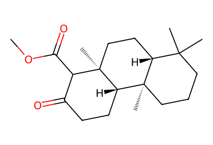
COC(=O)C1C(=O)CC[C@H]2[C@]3(C)CCCC(C)(C)[C@H]3CC[C@]12CSI-only named preparation network for breviones B,N,C and pyrone scope. Unnumbered unsuccessful Fig.S1 intermediates require further transcription; coverage explicitly partial. Facts compiled deterministically; independent review pending.
完整 JSON · 逐步 CSV · 路线序列 · SDF · HRMS 核对
| 事件 | 分子连接 | 报告产率 | Canonical reaction SMILES |
|---|---|---|---|
| M01 | known-sclareol-ketoester → 10a | 10a: 60% | COC(=O)C1C(=O)CC[C@H]2[C@]3(C)CCCC(C)(C)[C@H]3CC[C@]12C>>CC1(C)CCC[C@]2(C)[C@@H]1CC[C@]1(C)C(CO)C(=O)CC[C@@H]21 |
| M02 | 10a → 11a | 11a: 90% | CC1(C)CCC[C@]2(C)[C@@H]1CC[C@]1(C)C(CO)C(=O)CC[C@@H]21>>C=C1C(=O)CC[C@H]2[C@]3(C)CCCC(C)(C)[C@H]3CC[C@]12C |
| M03 | 11a + 9a → 17a | 17a: 85% | C=C1C(=O)CC[C@H]2[C@]3(C)CCCC(C)(C)[C@H]3CC[C@]12C.Cc1oc(=O)cc(O)c1C>>Cc1oc(=O)c(CC2C(=O)CC[C@H]3[C@]4(C)CCCC(C)(C)[C@H]4CC[C@]23C)c(O)c1C |
| M04 | 17a → 12a | 12a: 70% | Cc1oc(=O)c(CC2C(=O)CC[C@H]3[C@]4(C)CCCC(C)(C)[C@H]4CC[C@]23C)c(O)c1C>>Cc1oc(=O)c2c(c1C)OC1=C(C2)[C@@]2(C)CC[C@@H]3C(C)(C)CCC[C@@]3(C)[C@@H]2CC1 |
| M05 | 12a → 18a | 18a: 90% | Cc1oc(=O)c2c(c1C)OC1=C(C2)[C@@]2(C)CC[C@@H]3C(C)(C)CCC[C@@]3(C)[C@@H]2CC1>>Cc1oc(=O)c2c(c1C)OC13CC[C@H]4[C@]5(C)CCCC(C)(C)[C@H]5CC[C@]4(C)C1(C2)O3 |
| M06 | 18a → 19a + 20a | 19a: 90%; 20a: 10% | Cc1oc(=O)c2c(c1C)OC13CC[C@H]4[C@]5(C)CCCC(C)(C)[C@H]5CC[C@]4(C)C1(C2)O3>>Cc1oc(=O)c(CC2(O)C(=O)CC[C@H]3[C@]4(C)CCCC(C)(C)[C@H]4CC[C@@]32C)c(O)c1C.Cc1oc(=O)c2c(c1C)OC13CC[C@H]4[C@]5(C)CCCC(C)(C)[C@H]5CC[C@]4(C)C1(C2)O3 |
| M07 | 19a → 13a | 13a: 56% | Cc1oc(=O)c(CC2(O)C(=O)CC[C@H]3[C@]4(C)CCCC(C)(C)[C@H]4CC[C@@]32C)c(O)c1C>>Cc1oc(=O)c2c(c1C)O[C@@]1(C2)C(=O)CC[C@H]2[C@]3(C)CCCC(C)(C)[C@H]3CC[C@@]21C |
| M08 | 10a + 9a → 19a | 19a: 55% | CC1(C)CCC[C@]2(C)[C@@H]1CC[C@]1(C)C(CO)C(=O)CC[C@@H]21.Cc1oc(=O)cc(O)c1C>>Cc1oc(=O)c(CC2(O)C(=O)CC[C@H]3[C@]4(C)CCCC(C)(C)[C@H]4CC[C@@]32C)c(O)c1C |
| M09b | 10a + 9b → 19b | 19b: 54% | CC1(C)CCC[C@]2(C)[C@@H]1CC[C@]1(C)C(CO)C(=O)CC[C@@H]21.Cc1cc(O)cc(=O)o1>>Cc1cc(O)c(CC2(O)C(=O)CC[C@H]3[C@]4(C)CCCC(C)(C)[C@H]4CC[C@@]32C)c(=O)o1 |
| M09c | 10a + 9c → 19c | 19c: 64% | CC1(C)CCC[C@]2(C)[C@@H]1CC[C@]1(C)C(CO)C(=O)CC[C@@H]21.Cc1c(O)cc(=O)oc1C(C)C>>Cc1c(C(C)C)oc(=O)c(CC2(O)C(=O)CC[C@H]3[C@]4(C)CCCC(C)(C)[C@H]4CC[C@@]32C)c1O |
| M09d | 10a + 9d → 19d | 19d: 54% | CC1(C)CCC[C@]2(C)[C@@H]1CC[C@]1(C)C(CO)C(=O)CC[C@@H]21.O=c1cc(O)c2c(o1)CCC2>>CC1(C)CCC[C@]2(C)[C@@H]1CC[C@@]1(C)[C@H]2CCC(=O)C1(O)Cc1c(O)c2c(oc1=O)CCC2 |
| M10b | 19b → 13b | 13b: 42% | Cc1cc(O)c(CC2(O)C(=O)CC[C@H]3[C@]4(C)CCCC(C)(C)[C@H]4CC[C@@]32C)c(=O)o1>>Cc1cc2c(c(=O)o1)C[C@]1(O2)C(=O)CC[C@H]2[C@]3(C)CCCC(C)(C)[C@H]3CC[C@@]21C |
| M10c | 19c → 13c | 13c: 54% | Cc1c(C(C)C)oc(=O)c(CC2(O)C(=O)CC[C@H]3[C@]4(C)CCCC(C)(C)[C@H]4CC[C@@]32C)c1O>>Cc1c(C(C)C)oc(=O)c2c1O[C@@]1(C2)C(=O)CC[C@H]2[C@]3(C)CCCC(C)(C)[C@H]3CC[C@@]21C |
| M10d | 19d → 13d | 13d: 33% | CC1(C)CCC[C@]2(C)[C@@H]1CC[C@@]1(C)[C@H]2CCC(=O)C1(O)Cc1c(O)c2c(oc1=O)CCC2>>CC1(C)CCC[C@]2(C)[C@@H]1CC[C@@]1(C)[C@H]2CCC(=O)[C@@]12Cc1c(c3c(oc1=O)CCC3)O2 |
| M11e | 10a + 9e → 18e | 18e: 76% | CC1(C)CCC[C@]2(C)[C@@H]1CC[C@]1(C)C(CO)C(=O)CC[C@@H]21.O=c1cc(O)cc(-c2ccccc2)o1>>CC1(C)CCC[C@]2(C)[C@@H]1CC[C@@]1(C)[C@H]2CCC23Oc4cc(-c5ccccc5)oc(=O)c4CC21O3 |
| M11f | 10a + 9f → 18f | 18f: 79% | CC1(C)CCC[C@]2(C)[C@@H]1CC[C@]1(C)C(CO)C(=O)CC[C@@H]21.O=c1cc(O)c2ccccc2o1>>CC1(C)CCC[C@]2(C)[C@@H]1CC[C@@]1(C)[C@H]2CCC23Oc4c(c(=O)oc5ccccc45)CC21O3 |
| M12e | 18e → 13e | 13e: 34% | CC1(C)CCC[C@]2(C)[C@@H]1CC[C@@]1(C)[C@H]2CCC23Oc4cc(-c5ccccc5)oc(=O)c4CC21O3>>CC1(C)CCC[C@]2(C)[C@@H]1CC[C@@]1(C)[C@H]2CCC(=O)[C@@]12Cc1c(cc(-c3ccccc3)oc1=O)O2 |
| M12f | 18f → 13f | 13f: 27% | CC1(C)CCC[C@]2(C)[C@@H]1CC[C@@]1(C)[C@H]2CCC23Oc4c(c(=O)oc5ccccc45)CC21O3>>CC1(C)CCC[C@]2(C)[C@@H]1CC[C@@]1(C)[C@H]2CCC(=O)[C@@]12Cc1c(c3ccccc3oc1=O)O2 |
| M13-CSA | 11a + 9a → 17a | 17a: 80% | C=C1C(=O)CC[C@H]2[C@]3(C)CCCC(C)(C)[C@H]3CC[C@]12C.Cc1oc(=O)cc(O)c1C>>Cc1oc(=O)c(CC2C(=O)CC[C@H]3[C@]4(C)CCCC(C)(C)[C@H]4CC[C@]23C)c(O)c1C |
| M13-TFA | 11a + 9a → 17a | 17a: 50% | C=C1C(=O)CC[C@H]2[C@]3(C)CCCC(C)(C)[C@H]3CC[C@]12C.Cc1oc(=O)cc(O)c1C>>Cc1oc(=O)c(CC2C(=O)CC[C@H]3[C@]4(C)CCCC(C)(C)[C@H]4CC[C@]23C)c(O)c1C |
| B01 | 21 → 22 | 22: 54% | CC(=O)OC/C=C(\C)CC/C=C(\C)CC/C=C(\C)CCC=C(C)C>>CC(=O)OC/C=C(\C)CC/C=C(\C)CC/C=C(\C)CC[C@@H](O)C(C)(C)O |
| B01-opt1 | 21 → 22 | 22: 9% | CC(=O)OC/C=C(\C)CC/C=C(\C)CC/C=C(\C)CCC=C(C)C>>CC(=O)OC/C=C(\C)CC/C=C(\C)CC/C=C(\C)CC[C@@H](O)C(C)(C)O |
| B01-opt2 | 21 → 22 | 22: 29% | CC(=O)OC/C=C(\C)CC/C=C(\C)CC/C=C(\C)CCC=C(C)C>>CC(=O)OC/C=C(\C)CC/C=C(\C)CC/C=C(\C)CC[C@@H](O)C(C)(C)O |
| B01-opt3 | 21 → 22 | 22: 47% | CC(=O)OC/C=C(\C)CC/C=C(\C)CC/C=C(\C)CCC=C(C)C>>CC(=O)OC/C=C(\C)CC/C=C(\C)CC/C=C(\C)CC[C@@H](O)C(C)(C)O |
| B01-opt4 | 21 → 22 | 22: 48% | CC(=O)OC/C=C(\C)CC/C=C(\C)CC/C=C(\C)CCC=C(C)C>>CC(=O)OC/C=C(\C)CC/C=C(\C)CC/C=C(\C)CC[C@@H](O)C(C)(C)O |
| B01-opt5 | 21 → 22 | 22: 43% | CC(=O)OC/C=C(\C)CC/C=C(\C)CC/C=C(\C)CCC=C(C)C>>CC(=O)OC/C=C(\C)CC/C=C(\C)CC/C=C(\C)CC[C@@H](O)C(C)(C)O |
| B02 | 22 → 23 | 23: 88% | CC(=O)OC/C=C(\C)CC/C=C(\C)CC/C=C(\C)CC[C@@H](O)C(C)(C)O>>CC(=O)OC/C=C(\C)CC/C=C(\C)CC/C=C(\C)CC[C@@H]1OC1(C)C |
| B03 | 23 → 24 | 24: 30% | CC(=O)OC/C=C(\C)CC/C=C(\C)CC/C=C(\C)CC[C@@H]1OC1(C)C>>C=C1CC[C@H]2[C@]3(C)CCC(O)C(C)(C)[C@H]3CC[C@]2(C)C1COC(C)=O |
| B04 | 24 → 25 | 25: 80% | C=C1CC[C@H]2[C@]3(C)CCC(O)C(C)(C)[C@H]3CC[C@]2(C)C1COC(C)=O>>C=C1CC[C@H]2[C@]3(C)CCC(OCc4ccccc4)C(C)(C)[C@H]3CC[C@]2(C)C1COC(C)=O |
| B05 | 25 → 26 | 26: 54% | C=C1CC[C@H]2[C@]3(C)CCC(OCc4ccccc4)C(C)(C)[C@H]3CC[C@]2(C)C1COC(C)=O>>CC(=O)OCC1C(=O)CC[C@H]2[C@]3(C)CCC(OCc4ccccc4)C(C)(C)[C@H]3CC[C@]12C |
| B05-control | 25 → 26 | 26: 30% | C=C1CC[C@H]2[C@]3(C)CCC(OCc4ccccc4)C(C)(C)[C@H]3CC[C@]2(C)C1COC(C)=O>>CC(=O)OCC1C(=O)CC[C@H]2[C@]3(C)CCC(OCc4ccccc4)C(C)(C)[C@H]3CC[C@]12C |
| B06 | 26 + 9a → 27 | 27: 48% | CC(=O)OCC1C(=O)CC[C@H]2[C@]3(C)CCC(OCc4ccccc4)C(C)(C)[C@H]3CC[C@]12C.Cc1oc(=O)cc(O)c1C>>Cc1oc(=O)c2c(c1C)OC1=C(C2)[C@@]2(C)CC[C@@H]3C(C)(C)C(OCc4ccccc4)CC[C@@]3(C)[C@@H]2CC1 |
| B07 | 27 → 28 | 28: 89% | Cc1oc(=O)c2c(c1C)OC1=C(C2)[C@@]2(C)CC[C@@H]3C(C)(C)C(OCc4ccccc4)CC[C@@]3(C)[C@@H]2CC1>>Cc1oc(=O)c2c(c1C)OC13CC[C@H]4[C@]5(C)CCC(OCc6ccccc6)C(C)(C)[C@H]5CC[C@]4(C)C1(C2)O3 |
| B08 | 28 → 29 | not reported | Cc1oc(=O)c2c(c1C)OC13CC[C@H]4[C@]5(C)CCC(OCc6ccccc6)C(C)(C)[C@H]5CC[C@]4(C)C1(C2)O3>>Cc1oc(=O)c(CC2(O)C(=O)CC[C@H]3[C@]4(C)CCC(OCc5ccccc5)C(C)(C)[C@H]4CC[C@@]32C)c(O)c1C |
| B09 | 29 → 30 | 30: 45% | Cc1oc(=O)c(CC2(O)C(=O)CC[C@H]3[C@]4(C)CCC(OCc5ccccc5)C(C)(C)[C@H]4CC[C@@]32C)c(O)c1C>>Cc1oc(=O)c2c(c1C)O[C@@]1(C2)C(=O)CC[C@H]2[C@]3(C)CCC(OCc4ccccc4)C(C)(C)[C@H]3CC[C@@]21C |
| B10 | 30 → 31 | 31: 90% | Cc1oc(=O)c2c(c1C)O[C@@]1(C2)C(=O)CC[C@H]2[C@]3(C)CCC(OCc4ccccc4)C(C)(C)[C@H]3CC[C@@]21C>>Cc1oc(=O)c2c(c1C)O[C@@]1(C2)C(C)(O)CC[C@H]2[C@]3(C)CCC(OCc4ccccc4)C(C)(C)[C@H]3CC[C@@]21C |
| B11 | 31 → 31' | 31': 67% | Cc1oc(=O)c2c(c1C)O[C@@]1(C2)C(C)(O)CC[C@H]2[C@]3(C)CCC(OCc4ccccc4)C(C)(C)[C@H]3CC[C@@]21C>>CC1=CC[C@H]2[C@]3(C)CCC(OCc4ccccc4)C(C)(C)[C@H]3CC[C@]2(C)[C@]12Cc1c(c(C)c(C)oc1=O)O2 |
| B12 | 31' → 3 | 3: 89% | CC1=CC[C@H]2[C@]3(C)CCC(OCc4ccccc4)C(C)(C)[C@H]3CC[C@]2(C)[C@]12Cc1c(c(C)c(C)oc1=O)O2>>CC1=CC[C@H]2[C@]3(C)CCC(O)C(C)(C)[C@H]3CC[C@]2(C)[C@]12Cc1c(c(C)c(C)oc1=O)O2 |
| B13 | 3 → 2 | 2: 91% | CC1=CC[C@H]2[C@]3(C)CCC(O)C(C)(C)[C@H]3CC[C@]2(C)[C@]12Cc1c(c(C)c(C)oc1=O)O2>>CC1=CC[C@H]2[C@]3(C)CCC(=O)C(C)(C)[C@H]3CC[C@]2(C)[C@]12Cc1c(c(C)c(C)oc1=O)O2 |
| C00 | farnesyl acetone → 32 | not reported | CC(=O)CC/C=C(\C)CC/C=C(\C)CCC=C(C)C>>CC(=O)CC/C=C(\C)CC/C=C(\C)CC/C=C(\C)CO |
| C01 | 32 → 16 | 16: 65% | CC(=O)CC/C=C(\C)CC/C=C(\C)CC/C=C(\C)CO>>CC(=O)CC/C=C(\C)CC/C=C(\C)CC[C@@H]1O[C@@]1(C)CO |
| C02 | 16 → 15 + 15' | 15: 25%; 15': 4% | CC(=O)CC/C=C(\C)CC/C=C(\C)CC[C@@H]1O[C@@]1(C)CO>>CC(=O)CCC1=C(C)CC[C@@H]2C(C)(CO)C(O)CC[C@@]12C.CC(=O)CC[C@@H]1C(C)=CC[C@@H]2C(C)(CO)C(O)CC[C@@]12C |
| C03 | 15 → 15a | 15a: 45% | CC(=O)CCC1=C(C)CC[C@@H]2C(C)(CO)C(O)CC[C@@]12C>>CC(=O)CCC1=C(C)CC[C@@H]2C(C)(COC(=S)Oc3ccccc3)C(O)CC[C@@]12C |
| C04 | 15a → 33 | 33: 53% | CC(=O)CCC1=C(C)CC[C@@H]2C(C)(COC(=S)Oc3ccccc3)C(O)CC[C@@]12C>>CC1=C(CCC2(C)OCCO2)[C@]2(C)CCC(=O)C(C)(COC(=S)Oc3ccccc3)[C@H]2CC1 |
| C05 | 33 → 34 | 34: 76% | CC1=C(CCC2(C)OCCO2)[C@]2(C)CCC(=O)C(C)(COC(=S)Oc3ccccc3)[C@H]2CC1>>CC1=C(CCC2(C)OCCO2)[C@]2(C)CCC(=O)CC(C)[C@H]2CC1 |
| C06 | 34 → 35 | 35: 78% | CC1=C(CCC2(C)OCCO2)[C@]2(C)CCC(=O)CC(C)[C@H]2CC1>>CC1=C(CCC2(C)OCCO2)[C@]2(C)CCC(O)CC(C)[C@H]2CC1 |
| C07 | 35 → 36 | 36: 56% | CC1=C(CCC2(C)OCCO2)[C@]2(C)CCC(O)CC(C)[C@H]2CC1>>CC(=O)CCC1=C(C)CC[C@@H]2C(C)CC(OCc3ccccc3)CC[C@@]12C |
| C08 | 36 → 14 | 14: 72% | CC(=O)CCC1=C(C)CC[C@@H]2C(C)CC(OCc3ccccc3)CC[C@@]12C>>COC(=O)CC(=O)CCC1=C(C)CC[C@@H]2C(C)CC(OCc3ccccc3)CC[C@@]12C |
| C09 | 14 → 38 | 38: 41% | COC(=O)CC(=O)CCC1=C(C)CC[C@@H]2C(C)CC(OCc3ccccc3)CC[C@@]12C>>COC(=O)C1C(=O)CC[C@H]2[C@]3(C)CCC(OCc4ccccc4)CC(C)[C@H]3CC[C@]12C |
| C10 | 38 → 8 | not reported | COC(=O)C1C(=O)CC[C@H]2[C@]3(C)CCC(OCc4ccccc4)CC(C)[C@H]3CC[C@]12C>>CC1CC(OCc2ccccc2)CC[C@]2(C)[C@@H]1CC[C@]1(C)C(CO)C(=O)CC[C@@H]21 |
| C11 | 8 + 9a → 39 | 39: 31% | CC1CC(OCc2ccccc2)CC[C@]2(C)[C@@H]1CC[C@]1(C)C(CO)C(=O)CC[C@@H]21.Cc1oc(=O)cc(O)c1C>>Cc1oc(=O)c2c(c1C)OC1=C(C2)[C@@]2(C)CC[C@@H]3C(C)CC(OCc4ccccc4)CC[C@@]3(C)[C@@H]2CC1 |
| C12 | 39 → 40 | not reported | Cc1oc(=O)c2c(c1C)OC1=C(C2)[C@@]2(C)CC[C@@H]3C(C)CC(OCc4ccccc4)CC[C@@]3(C)[C@@H]2CC1>>Cc1oc(=O)c2c(c1C)OC13CC[C@H]4[C@]5(C)CCC(OCc6ccccc6)CC(C)[C@H]5CC[C@]4(C)C1(C2)O3 |
| C13 | 40 → 41 | not reported | Cc1oc(=O)c2c(c1C)OC13CC[C@H]4[C@]5(C)CCC(OCc6ccccc6)CC(C)[C@H]5CC[C@]4(C)C1(C2)O3>>Cc1oc(=O)c(CC2(O)C(=O)CC[C@H]3[C@]4(C)CCC(OCc5ccccc5)CC(C)[C@H]4CC[C@@]32C)c(O)c1C |
| C14 | 41 → 7 | 7: 32% | Cc1oc(=O)c(CC2(O)C(=O)CC[C@H]3[C@]4(C)CCC(OCc5ccccc5)CC(C)[C@H]4CC[C@@]32C)c(O)c1C>>Cc1oc(=O)c2c(c1C)O[C@@]1(C2)C(=O)CC[C@H]2[C@]3(C)CCC(OCc4ccccc4)CC(C)[C@H]3CC[C@@]21C |
| C15 | 7 → 42 | 42: 57% | Cc1oc(=O)c2c(c1C)O[C@@]1(C2)C(=O)CC[C@H]2[C@]3(C)CCC(OCc4ccccc4)CC(C)[C@H]3CC[C@@]21C>>CC1=CC[C@H]2[C@]3(C)CCC(OCc4ccccc4)CC(C)[C@H]3CC[C@]2(C)[C@]12Cc1c(c(C)c(C)oc1=O)O2 |
| C16 | 42 → 43 | 43: 85% | CC1=CC[C@H]2[C@]3(C)CCC(OCc4ccccc4)CC(C)[C@H]3CC[C@]2(C)[C@]12Cc1c(c(C)c(C)oc1=O)O2>>CC1=CC[C@H]2[C@]3(C)CCC(O)CC(C)[C@H]3CC[C@]2(C)[C@]12Cc1c(c(C)c(C)oc1=O)O2 |
| C17 | 43 → 4 | 4: 31% | CC1=CC[C@H]2[C@]3(C)CCC(O)CC(C)[C@H]3CC[C@]2(C)[C@]12Cc1c(c(C)c(C)oc1=O)O2>>CC1=CC(=O)C=C[C@]2(C)[C@@H]1CC[C@@]1(C)[C@H]2CC=C(C)[C@@]12Cc1c(c(C)c(C)oc1=O)O2 |

COC(=O)C1C(=O)CC[C@H]2[C@]3(C)CCCC(C)(C)[C@H]3CC[C@]12C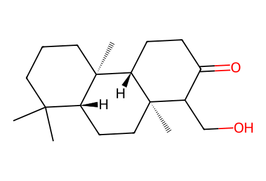
CC1(C)CCC[C@]2(C)[C@@H]1CC[C@]1(C)C(CO)C(=O)CC[C@@H]21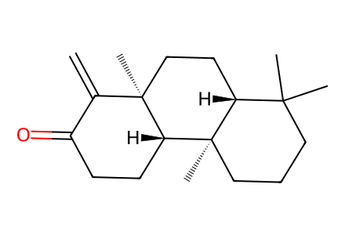
C=C1C(=O)CC[C@H]2[C@]3(C)CCCC(C)(C)[C@H]3CC[C@]12C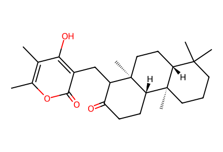
Cc1oc(=O)c(CC2C(=O)CC[C@H]3[C@]4(C)CCCC(C)(C)[C@H]4CC[C@]23C)c(O)c1C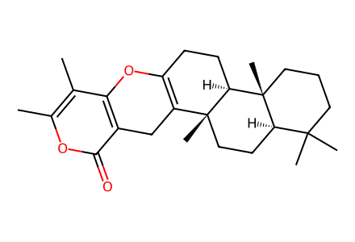
Cc1oc(=O)c2c(c1C)OC1=C(C2)[C@@]2(C)CC[C@@H]3C(C)(C)CCC[C@@]3(C)[C@@H]2CC1
Cc1oc(=O)c2c(c1C)OC13CC[C@H]4[C@]5(C)CCCC(C)(C)[C@H]5CC[C@]4(C)C1(C2)O3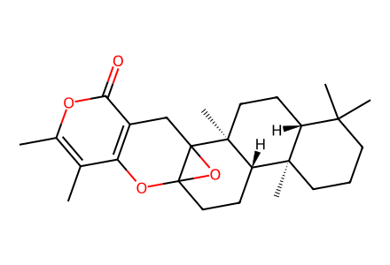
Cc1oc(=O)c2c(c1C)OC13CC[C@H]4[C@]5(C)CCCC(C)(C)[C@H]5CC[C@]4(C)C1(C2)O3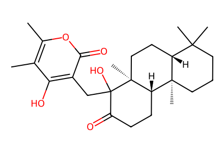
Cc1oc(=O)c(CC2(O)C(=O)CC[C@H]3[C@]4(C)CCCC(C)(C)[C@H]4CC[C@@]32C)c(O)c1C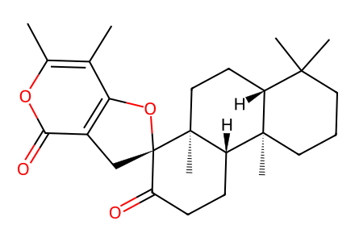
Cc1oc(=O)c2c(c1C)O[C@@]1(C2)C(=O)CC[C@H]2[C@]3(C)CCCC(C)(C)[C@H]3CC[C@@]21C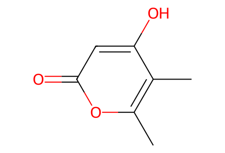
Cc1oc(=O)cc(O)c1C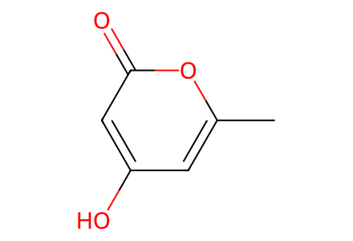
Cc1cc(O)cc(=O)o1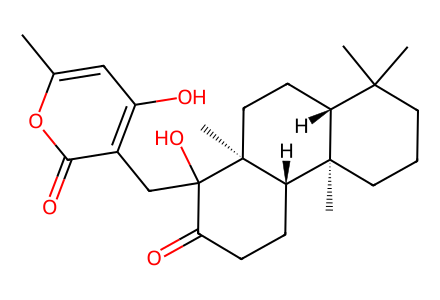
Cc1cc(O)c(CC2(O)C(=O)CC[C@H]3[C@]4(C)CCCC(C)(C)[C@H]4CC[C@@]32C)c(=O)o1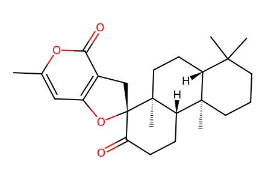
Cc1cc2c(c(=O)o1)C[C@]1(O2)C(=O)CC[C@H]2[C@]3(C)CCCC(C)(C)[C@H]3CC[C@@]21C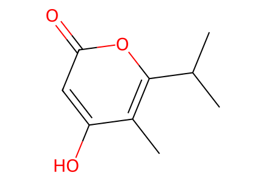
Cc1c(O)cc(=O)oc1C(C)C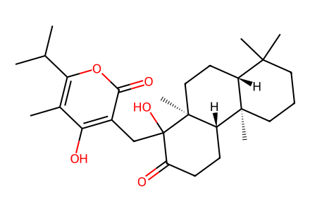
Cc1c(C(C)C)oc(=O)c(CC2(O)C(=O)CC[C@H]3[C@]4(C)CCCC(C)(C)[C@H]4CC[C@@]32C)c1O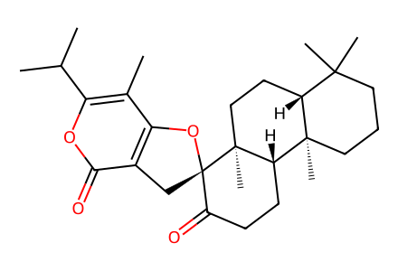
Cc1c(C(C)C)oc(=O)c2c1O[C@@]1(C2)C(=O)CC[C@H]2[C@]3(C)CCCC(C)(C)[C@H]3CC[C@@]21C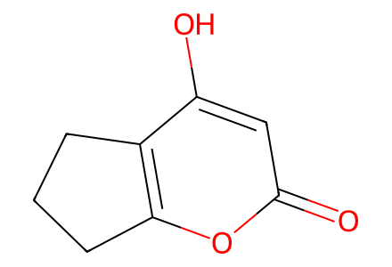
O=c1cc(O)c2c(o1)CCC2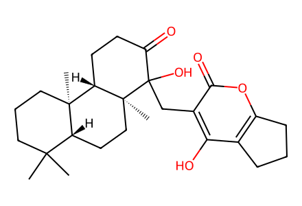
CC1(C)CCC[C@]2(C)[C@@H]1CC[C@@]1(C)[C@H]2CCC(=O)C1(O)Cc1c(O)c2c(oc1=O)CCC2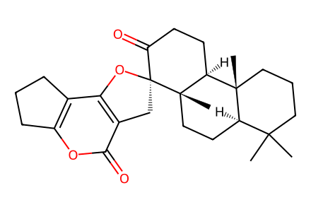
CC1(C)CCC[C@]2(C)[C@@H]1CC[C@@]1(C)[C@H]2CCC(=O)[C@@]12Cc1c(c3c(oc1=O)CCC3)O2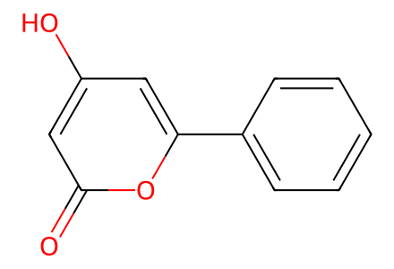
O=c1cc(O)cc(-c2ccccc2)o1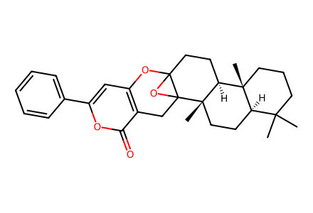
CC1(C)CCC[C@]2(C)[C@@H]1CC[C@@]1(C)[C@H]2CCC23Oc4cc(-c5ccccc5)oc(=O)c4CC21O3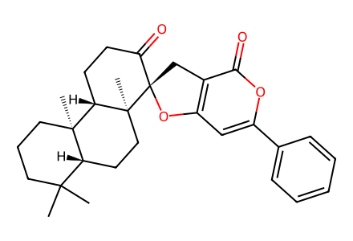
CC1(C)CCC[C@]2(C)[C@@H]1CC[C@@]1(C)[C@H]2CCC(=O)[C@@]12Cc1c(cc(-c3ccccc3)oc1=O)O2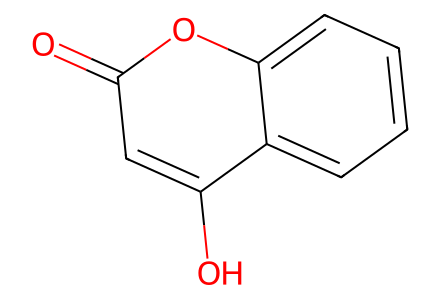
O=c1cc(O)c2ccccc2o1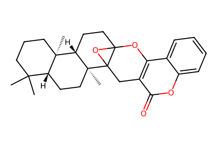
CC1(C)CCC[C@]2(C)[C@@H]1CC[C@@]1(C)[C@H]2CCC23Oc4c(c(=O)oc5ccccc45)CC21O3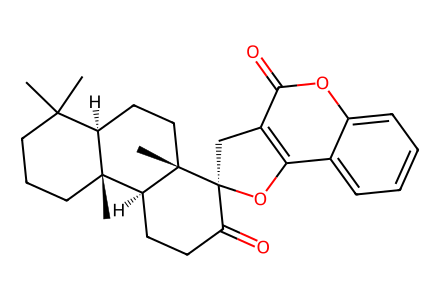
CC1(C)CCC[C@]2(C)[C@@H]1CC[C@@]1(C)[C@H]2CCC(=O)[C@@]12Cc1c(c3ccccc3oc1=O)O2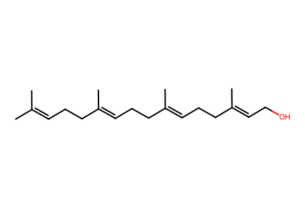
CC(C)=CCC/C(C)=C/CC/C(C)=C/CC/C(C)=C/CO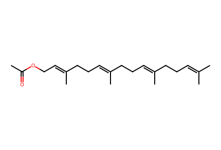
CC(=O)OC/C=C(\C)CC/C=C(\C)CC/C=C(\C)CCC=C(C)C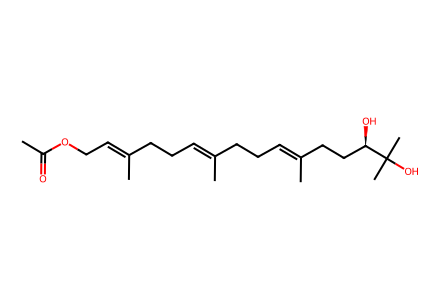
CC(=O)OC/C=C(\C)CC/C=C(\C)CC/C=C(\C)CC[C@@H](O)C(C)(C)O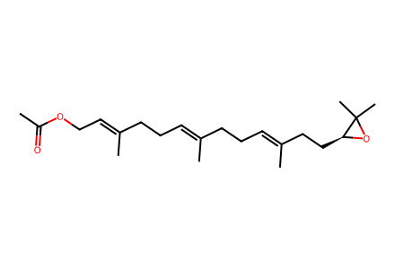
CC(=O)OC/C=C(\C)CC/C=C(\C)CC/C=C(\C)CC[C@@H]1OC1(C)C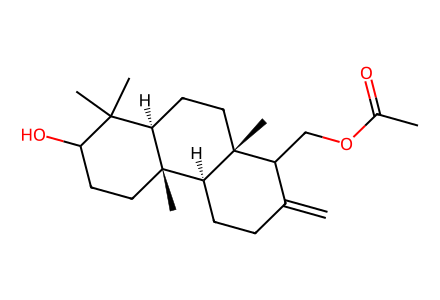
C=C1CC[C@H]2[C@]3(C)CCC(O)C(C)(C)[C@H]3CC[C@]2(C)C1COC(C)=O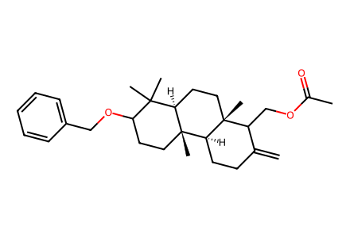
C=C1CC[C@H]2[C@]3(C)CCC(OCc4ccccc4)C(C)(C)[C@H]3CC[C@]2(C)C1COC(C)=O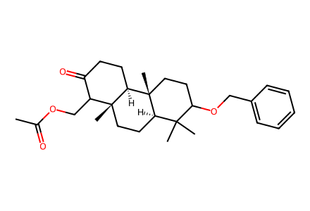
CC(=O)OCC1C(=O)CC[C@H]2[C@]3(C)CCC(OCc4ccccc4)C(C)(C)[C@H]3CC[C@]12C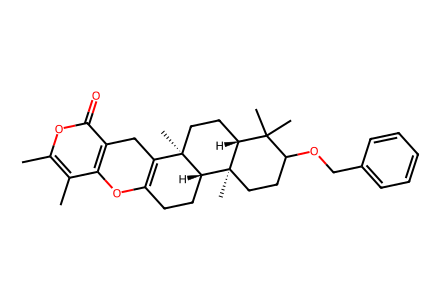
Cc1oc(=O)c2c(c1C)OC1=C(C2)[C@@]2(C)CC[C@@H]3C(C)(C)C(OCc4ccccc4)CC[C@@]3(C)[C@@H]2CC1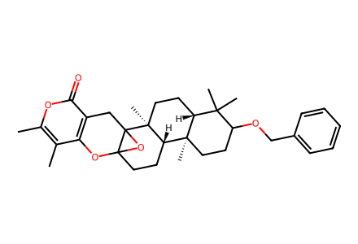
Cc1oc(=O)c2c(c1C)OC13CC[C@H]4[C@]5(C)CCC(OCc6ccccc6)C(C)(C)[C@H]5CC[C@]4(C)C1(C2)O3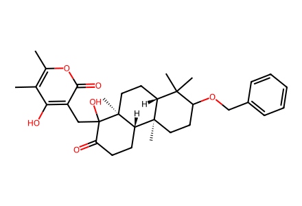
Cc1oc(=O)c(CC2(O)C(=O)CC[C@H]3[C@]4(C)CCC(OCc5ccccc5)C(C)(C)[C@H]4CC[C@@]32C)c(O)c1C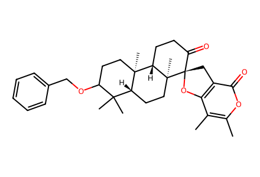
Cc1oc(=O)c2c(c1C)O[C@@]1(C2)C(=O)CC[C@H]2[C@]3(C)CCC(OCc4ccccc4)C(C)(C)[C@H]3CC[C@@]21C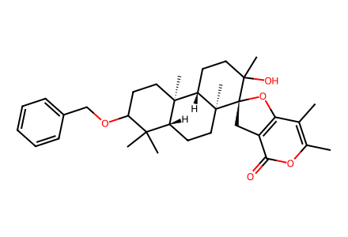
Cc1oc(=O)c2c(c1C)O[C@@]1(C2)C(C)(O)CC[C@H]2[C@]3(C)CCC(OCc4ccccc4)C(C)(C)[C@H]3CC[C@@]21C
CC1=CC[C@H]2[C@]3(C)CCC(OCc4ccccc4)C(C)(C)[C@H]3CC[C@]2(C)[C@]12Cc1c(c(C)c(C)oc1=O)O2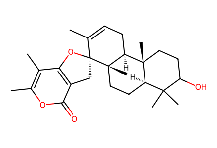
CC1=CC[C@H]2[C@]3(C)CCC(O)C(C)(C)[C@H]3CC[C@]2(C)[C@]12Cc1c(c(C)c(C)oc1=O)O2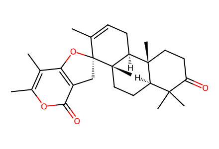
CC1=CC[C@H]2[C@]3(C)CCC(=O)C(C)(C)[C@H]3CC[C@]2(C)[C@]12Cc1c(c(C)c(C)oc1=O)O2
CC(=O)CC/C=C(\C)CC/C=C(\C)CCC=C(C)C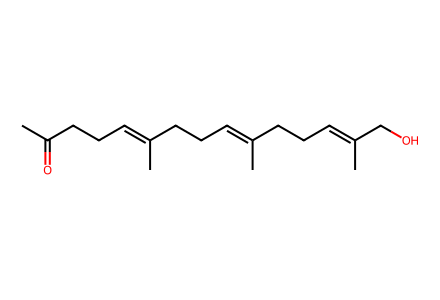
CC(=O)CC/C=C(\C)CC/C=C(\C)CC/C=C(\C)CO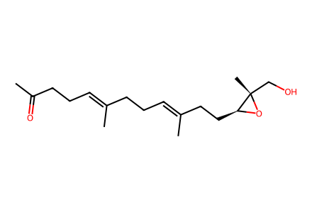
CC(=O)CC/C=C(\C)CC/C=C(\C)CC[C@@H]1O[C@@]1(C)CO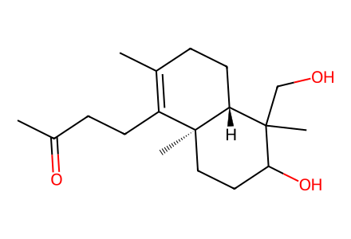
CC(=O)CCC1=C(C)CC[C@@H]2C(C)(CO)C(O)CC[C@@]12C
CC(=O)CC[C@@H]1C(C)=CC[C@@H]2C(C)(CO)C(O)CC[C@@]12C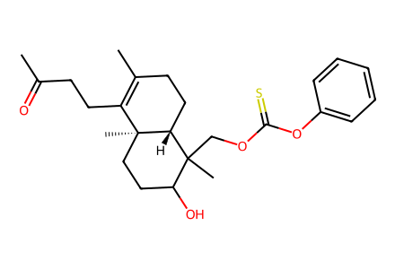
CC(=O)CCC1=C(C)CC[C@@H]2C(C)(COC(=S)Oc3ccccc3)C(O)CC[C@@]12C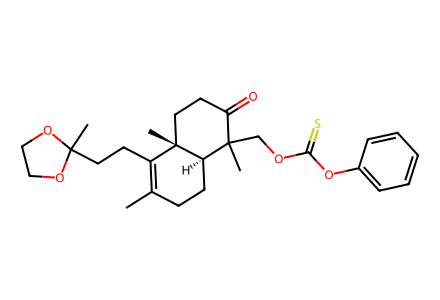
CC1=C(CCC2(C)OCCO2)[C@]2(C)CCC(=O)C(C)(COC(=S)Oc3ccccc3)[C@H]2CC1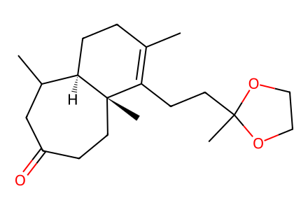
CC1=C(CCC2(C)OCCO2)[C@]2(C)CCC(=O)CC(C)[C@H]2CC1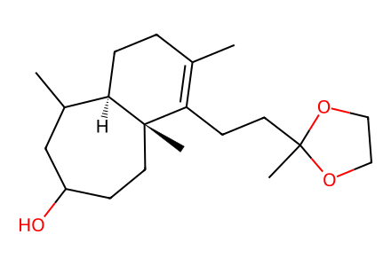
CC1=C(CCC2(C)OCCO2)[C@]2(C)CCC(O)CC(C)[C@H]2CC1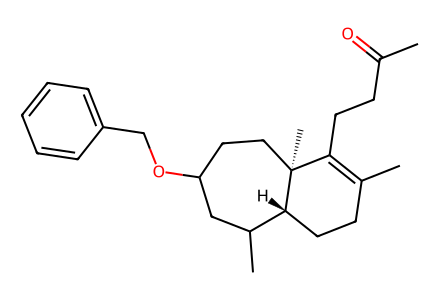
CC(=O)CCC1=C(C)CC[C@@H]2C(C)CC(OCc3ccccc3)CC[C@@]12C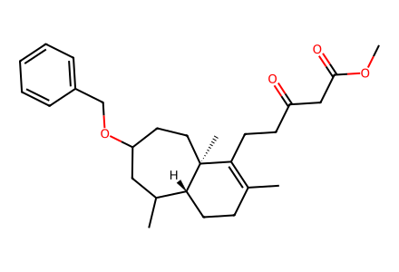
COC(=O)CC(=O)CCC1=C(C)CC[C@@H]2C(C)CC(OCc3ccccc3)CC[C@@]12C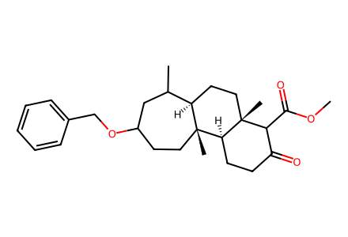
COC(=O)C1C(=O)CC[C@H]2[C@]3(C)CCC(OCc4ccccc4)CC(C)[C@H]3CC[C@]12C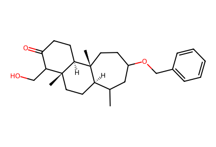
CC1CC(OCc2ccccc2)CC[C@]2(C)[C@@H]1CC[C@]1(C)C(CO)C(=O)CC[C@@H]21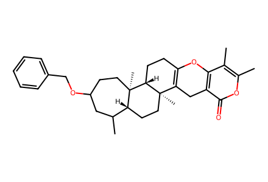
Cc1oc(=O)c2c(c1C)OC1=C(C2)[C@@]2(C)CC[C@@H]3C(C)CC(OCc4ccccc4)CC[C@@]3(C)[C@@H]2CC1Cc1oc(=O)c2c(c1C)OC13CC[C@H]4[C@]5(C)CCC(OCc6ccccc6)CC(C)[C@H]5CC[C@]4(C)C1(C2)O3Cc1oc(=O)c(CC2(O)C(=O)CC[C@H]3[C@]4(C)CCC(OCc5ccccc5)CC(C)[C@H]4CC[C@@]32C)c(O)c1CCc1oc(=O)c2c(c1C)O[C@@]1(C2)C(=O)CC[C@H]2[C@]3(C)CCC(OCc4ccccc4)CC(C)[C@H]3CC[C@@]21CCC1=CC[C@H]2[C@]3(C)CCC(OCc4ccccc4)CC(C)[C@H]3CC[C@]2(C)[C@]12Cc1c(c(C)c(C)oc1=O)O2CC1=CC[C@H]2[C@]3(C)CCC(O)CC(C)[C@H]3CC[C@]2(C)[C@]12Cc1c(c(C)c(C)oc1=O)O2CC1=CC(=O)C=C[C@]2(C)[C@@H]1CC[C@@]1(C)[C@H]2CC=C(C)[C@@]12Cc1c(c(C)c(C)oc1=O)O2